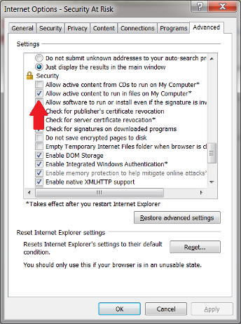
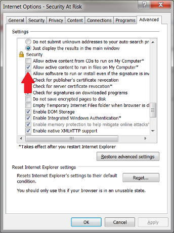
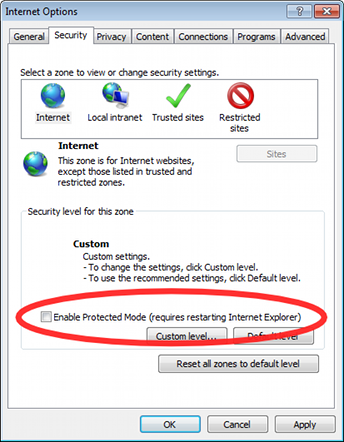

See the Selenium docs
for more information on customizing browsers.
Troubleshooting
64-bit Java
Some users will find Selenium has trouble opening while using 64 bit java (on Windows). You will see an error like
Could not start Selenium session: Failed to start new browser session.
This is because Selenium looks in the 64-bit Program Files directory, and there is no Firefox there. To fix this, change browsers to include the path like this:
Certain browsers, like Safari and Chrome, don't run Selenium tests from filesystem because
of security resrictions. You must run pages from a server.
To run Safari 5 in Windows, you should use the safariproxy browser string.
-browser *safariproxy
Mac Safari is just "*safari".
Slow Mode
You can slow down the amount of time between tests by setting FuncUnit.speed. By default, FuncUnit commands
in Selenium will run as soon as the previous command is complete. If you set FuncUnit.speed to "slow" this
becomes 500ms between commands. You may also provide a number of milliseconds. Slow mode can be useful while debugging.
IE Troubleshooting
If IE isn't running test pages from filesystem, disable security settings for pages that run from the filesystem.
Open the Internet Options in IE and select the "Advanced" tab
Enable the option to "Allow active content to run in files on My Computer."

If you're getting an IE popup blocker error, you may need to disable "Protected Mode"
Selenium is a browser automation tool. FuncUnit integrates with Selenium, using it to open several browsers and report results.
Use
There is no installation step with Selenium. The jar files come prepackaged with FuncUnit.
Other browsers
By default, selenium will try to open firefox if your system has it installed.
To run your tests in another browser, supply a commandline parameter like:
Other browsers include: *firefox, *iexploreproxy, *safari, *googlechrome.
To define a custom path to a browser, put this in the string following the browser name.
See the Selenium docs for more information on customizing browsers.
Troubleshooting
64-bit Java
Some users will find Selenium has trouble opening while using 64 bit java (on Windows). You will see an error like
Could not start Selenium session: Failed to start new browser session.
This is because Selenium looks in the 64-bit Program Files directory, and there is no Firefox there. To fix this, change browsers to include the path like this:
Running From Safari and Chrome
Certain browsers, like Safari and Chrome, don't run Selenium tests from filesystem because of security resrictions. You must run pages from a server.
To run Safari 5 in Windows, you should use the safariproxy browser string.
Mac Safari is just "*safari".
Slow Mode
You can slow down the amount of time between tests by setting FuncUnit.speed. By default, FuncUnit commands in Selenium will run as soon as the previous command is complete. If you set FuncUnit.speed to "slow" this becomes 500ms between commands. You may also provide a number of milliseconds. Slow mode can be useful while debugging.
IE Troubleshooting
If IE isn't running test pages from filesystem, disable security settings for pages that run from the filesystem.

If you're getting an IE popup blocker error, you may need to disable "Protected Mode"
